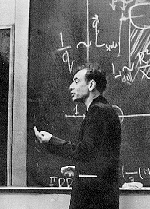

Teaching / Enseignement / Didattica:
Lecture notes:
- Notes of the course "Spin glasses" for the PhD in Statistical Physics
(SISSA, 2008-10 and Rome, 2011-2014):
arXiv:1008.4844
A Mathematica sheet to compute the complexity of the spherical 3-spin
- Appunti delle lezioni del corso di Fisica dei Liquidi, Roma 2005:
PDF,
TEX
-
Condensazione di Bose e superfluidità:
PDF,
TEX
-
Un appunto sul metodo di Newton:
PDF,
TEX
-
Fluttuazioni nel modello di Ising bidimensionale:
PDF,
TEX
-
Un appunto su variabili casuali indipendenti:
PDF,
TEX